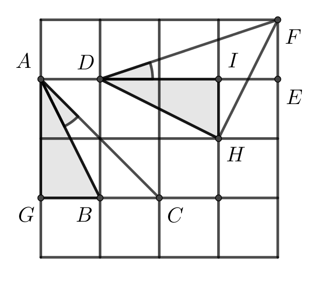

Problema 1. No plano complexo (plano de Argand-Gauss) um quadrado \(ABCD\) tem centro no ponto \(z=0\).
Se o vértice \(A\) encontra-se no afixo do número complexo \(z_1\), determine o número complexo que representa o baricentro do triângulo \(ABC\).
Solução 1. Observe a figura a seguir. Se o vértice \(A\) é o afixo do número complexo \(z_1\), segue que o vértice \(B\) corresponde ao afixo do número complexo \(iz_1\).(O número complexo cujo afixo é o ponto \(B\) é obtido de \(z_1\) por uma rotação de \(90^o\) no sentido anti-horário, o que é obtido por uma multiplicação por \(i\)).
Por fim, como o triângulo \(ABC\) é isósceles de base \(AC\), segue que \(OB\) é uma das medianas do triângulo. Sendo \(G\) o braricentro do triângulo \(ABC\), segue que \(OG=\frac{1}{3}OB \Rightarrow z_G=\frac{1}{3}i.z_1\) (onde \(z_G\) é o número complexo cujo afixo é o ponto \(G\)). Diante do exposto, \[z_G=\frac{1}{3} \cdot z_1=\frac{z_3}{3}\left(cos\frac{\pi}{2}+isen\frac{\pi}{2}\right).\]
Problema 2. Qual o número de pares ordenados \((a,b)\) de inteiros positivos \(a, b\) tais que as seguintes condições sejam simultaneamente satisfeitas?
\(a\mid 6000\);
\(1\le b \le \frac{6000}{a}\);
\(\operatorname{mdc}(a, b,\frac{6000}{a}) = 1\).
Solução 2. A função \(f(n)\) que conta tais pares com \(n\) no lugar de 6000 é multiplicativa, ou seja, \(f(mn) = f(m)f(n)\) se \(m,n\) são primos entre si. Daí é fácil ver que \(f(n) =n \cdot \prod_{p\mid n} (1 + \frac{1}{p})\) com \(p\) primo.
Problema 3. Seja \(r(x)\) o polinômio que é o resto na divisão de \(x^{2050}\) por \(x^5 + x^2 +1\). Quantos coeficientes ímpares possui \(r(x)\)?
Solução 3. Vamos trabalhar no anel de polinômios \(\mathbb{F}_2[x]\), em que \(\mathbb{F}_2\) é o corpo dos inteiros módulo 2. Neste anel, temos \[x^5 \equiv x^2 + 1 \pmod{x^5 + x^2 + 1}\] implica que \[x^{10} \equiv (x^2 + 1)^2 \equiv x^4 + 1 \pmod{x^5 + x^2 + 1},\] ou seja, \[\begin{aligned} x^{20} &\equiv (x^4 + 1)^2 \\ & \equiv x^8 + 1 \equiv x^3 (x^2+1) + 1 \\ &\equiv x^2 + x^3 \pmod{x^5 + x^2 + 1} \end{aligned}\] e portanto, módulo \(x^5 + x^2 + 1\), \[\begin{aligned} x^{30} &\equiv& (x^2 + x^3)\cdot (x^4 + 1) \\ &\equiv& x^7 + x^6 + x^3 + x^2\\ &\equiv& x^2(x^2+1) + x(x^2+1) + x^3 + x^2\\ &\equiv& x^4 + x\\ \implies x^{31} &\equiv& x^5 + x^2 \\ &\equiv& 1\end{aligned}\] (Uma maneira mais rápida de obter a última congruência seria perceber que \(x^5 + x^2 + 1\) é irredutítvel em \(\mathbb{F}_2[x]\), logo \(\mathbb{F}_2[x]/(x^5 + x^2 + 1)\) é um corpo, extensão de \(\mathbb{F}_2\) de grau 5, logo possui \(2^5 = 32\) elementos e por Lagrange \(a^{31} \equiv 1 \pmod{x^5 + x^2 + 1}\) se \(a\not\equiv 0 \pmod{x^5 + x^2 + 1}\)). Por fim, \(x^{2046} \equiv (x^{31})^{66} \equiv 1 \implies x^{2050} \equiv x^4\). Assim, \(r(x)\) é congruente a \(x^4\) módulo \(2\) e possui apenas 1 coeficiente ímpar.
Problema 4. Considere \(\Gamma\) o lugar geométrico dos pontos \(P\) do plano cuja razão entre a distância de \(P\) à origem e a distância entre \(P\) e a reta \(y=-1\) é constante e igual a \(\frac{1}{2}\). Qual a maior distância entre dois pontos de \(\Gamma\) ?
Solução 4. A descrição de tal lugar geométrico \(\Gamma\) é de uma cônica com excentricidade \(e = \frac{c}{a} = \frac{1}{2}\), ou seja, \(\Gamma\) é uma elipse. Além disso, um dos focos dessa elipse é a origem e a reta \(y = -1\) é uma diretriz. Assim, o eixo focal (sendo perpendicular à diretriz) é vertical, paralelo ao eixo \(y\). De onde, o eixo focal é o próprio eixo \(y\). Assim, a maior distância entre dois pontos de \(\Gamma\) é exatamente o dobro do comprimento do semieixo maior, isto é, \(2a\).
Para completar, sendo \(A\) o vértice da elipse que está entre o foco \(F_1 = (0,0)\) e a diretriz \(r : y=-1\), temos \[1 + \frac{ d(A,r)}{d(A,F_1)} = \frac{d(A,F_1) + d(A,r)}{d(A,F_1)} = \frac{d(F_1,r)}{d(A,F_1)} = \frac{1}{d(A,F_1)}\] e \[a - c = d(A,F_1) = \frac{1}{1 + \frac{1}{e}} = \frac{1}{1+2} = \frac{1}{3}.\] Também, \[\frac{c}{a} = \frac{1}{2} \ \ \Rightarrow \ \ c = \frac{a}{2}.\] Então, \(a - \frac{a}{2} = \frac{1}{3}\) e \(a = \frac{2}{3}\). De onde, a máxima distância procurada é \(2a = \frac{4}{3}\).
Problema 5. Seja \(f : \mathbb{R} \rightarrow \mathbb{R}\) uma função ímpar e diferenciável satisfazendo:
\(f(f(x)) = x\) para todo \(x \in \mathbb{R}\);
\(f'(0) = -1\).
Mostre que \(f(x) = -x\) para todo \(x \in \mathbb{R}\).
Solução 5. Como \(f(f(x)) = x\) para todo \(x \in \mathbb{R}\), então \(f'(f(x)) \cdot f'(x) = 1\). De onde, \(f'(x) \neq 0\), para todo \(x \in \mathbb{R}\).
Agora, se existisse \(a\) tal que \(f'(a) > 0\) e como \(f'(0) = -1\), teríamos \[-1 = f'(0) < 0 < f'(a).\] Então, pelo Teorema de Darboux (valor intermediário para a derivada), existiria \(b\) entre \(0\) e \(a\) tal que \(f'(b) = 0\), o que contraria o que acabamos de descobrir acima. Portanto, \(f'(x) < 0\) para todo \(x \in \mathbb{R}\), e \(f\) é estritamente decrescente.
Assim, se \(f(x) > -x\) para algum \(x\), então \(x = f(f(x)) < f(-x) = -f(x)\), isto é, \(f(x) < -x\) , sendo uma contradição. Analogamente, não pode ocorrer \(f(x) < -x\). Portanto, \(f(x) = -x\) para todo \(x \in \mathbb{R}\).
Problema 6. Sejam \(A, B \in M_n(\mathbb{R})\). Prove que \(\mbox{rank}(A) + \mbox{rank}(B) \leq n\) se, e somente se, existe uma matriz invertível \(X \in M_n(\mathbb{R})\) tal que \(AXB = O_n\), onde \(O_n\) é a matriz nula de ordem \(n\).
Solução 6. Queremos mostrar que \[\mbox{rank}(A) + \mbox{rank}(B) \leq n \ \ \ \ \Leftrightarrow \ \ \ \ \exists X \ \mbox{invertível} \ : \ AXB = O_n\]
\(( \ \Leftarrow \ ) :\) Supondo a existência de uma matriz invertível \(X\) satisfazendo \(AXB = O_n\), pela desigualdade de Sylvester para o posto de matrizes, tem-se \[0 = \mbox{rank}(O_n) = \mbox{rank}(AXB) \geq \mbox{rank}(A) + \mbox{rank}(XB) - n\] e \[\mbox{rank}(XB) \geq \mbox{rank}(B) + \mbox{rank}(X) - n\] \[= \mbox{rank}(B) + n - n = \mbox{rank}(B).\]
Daí, \(0 \geq \mbox{rank}(A) + \mbox{rank}(B) - n\), ou seja, \(\mbox{rank}(A) + \mbox{rank}(B) \leq n\).
\(( \ \Rightarrow \ ) :\) Estamos supondo agora que \(\mbox{rank}(A) + \mbox{rank}(B) \leq n\). Existem matrizes inversíveis \(X_A, Y_A, X_B\) e \(Y_B\) tais que \[Y_A \cdot A \cdot X_A = \begin{bmatrix} I_{\mbox{rank}(A)} & \ \ 0 \\ 0 & \ \ O_{n - \mbox{rank}(A)} \end{bmatrix}\] e \[X_B \cdot B \cdot Y_B = \begin{bmatrix} O_{n - \mbox{rank}(B)} & \ \ 0 \\ 0 & \ \ I_{\mbox{rank}(B)} \end{bmatrix}\] onde \(I_{\mbox{rank}(A)}\) e \(I_{\mbox{rank}(B)}\) são matrizes identidades de ordens \(\mbox{rank}(A)\) e \(\mbox{rank}(B)\), respectivamente. E \(0\) ali representam matrizes nulas com as devidas ordens para preencherem as entradas restantes. Assim, multiplicando \(Y_A \cdot A \cdot X_A\) e \(X_B \cdot B \cdot Y_B\), obtemos \[\begin{bmatrix} I_{\mbox{rank}(A)} & \ \ 0 \\ 0 & \ \ O_{n - \mbox{rank}(A)} \end{bmatrix} \cdot \begin{bmatrix} O_{n - \mbox{rank}(B)} & \ \ 0 \\ 0 & \ \ I_{\mbox{rank}(B)} \end{bmatrix} = O_n\] essa última igualdade ocorre pois \(n - \mbox{rank}(B) \geq \mbox{rank}(A)\) e \(n - \mbox{rank}(A) \geq \mbox{rank}(B)\).
Portanto, tomando \(X = X_A \cdot X_B\) (que é invertível), obtemos \[AXB = Y_A^{-1} \cdot O_n \cdot Y_B^{-1} = O_n.\]
Problema 7. Nas Olimpíadas de Pirajuba, existem \(6\) competidores e \(8\) dias de evento. Os três primeiros competidores de cada dia do evento recebem uma medalha, que pode ser de ouro, prata e bronze. Não existem empates e uma medalhade cada tipo é dada a apenas um atleta em cada dia do evento. Cada competidor recebe \(5\) pontos por cada medalha de ouro, \(3\) pontos por cada medalha de prata e \(1\) ponto por cada medalha de bronze. Se Luciana, que é uma das competidoras, conseguiu um total de \(27\) pontos no final do evento, qual o número máximo de medalhas de prata que ela pode ter recebido?
Solução 7. Como são oito dias de evento, ela não pode ter ganho mais que \(8\) medalhas de prata. Veja que essa quantidade não satisfaz o enunciado, pois \(8 \cdot 3 = 24 < 27\). Assim, ela obteve menos de \(8\) medalhas de prata. Vamos analisar os casos possíveis para determinar o número máximo de medalhas de prata que ela pode obter:
Se ela tivesse obtido \(7\) medalhas de prata, teria que fazer \(27-3 \cdot 7 = 6\) pontos em um dia de evento, mas isso não é possível.
Se ela tivesse obtido \(6\) medalhas de prata, teria que fazer \(27 - 3 \cdot 6 = 9\) pontos em dois dias de evento, mas isso não é possível pois \(5+3<9<5+5\).
Se ela tivesse obtido \(5\) medalhas de prata, teria que fazer \(27 - 3 \cdot 5 = 12\) pontos em três dias de evento. Como \(12> 3 \cdot 3\), pelo menos uma medalha de ouro, valendo \(5\) pontos, teria que ser obtida. Por outro lado, não é possível combinar apenas duas parcelas de \(1\), \(3\) e \(5\) para obter os \(12-5 = 7\) pontos restantes. Consequentemente, ela não pode ter obtido \(5\) medalhas de prata.
Para mostrar que \(4\) medalhas de prata é o máximo, basta exibirmos um exemplo. Após obter \(3 \cdot 4 = 12\) pontos em \(4\) dias com medalhas de prata, ela precisaria ter obtido \(27 - 3 \cdot 4 = 15\) pontos nos outros \(4\) dias. Luciana pode obter essa pontuação com \(3\) medalhas de ouro em \(3\) dias e \(1\) dia sem premiação.
Problema 8. Um encontro de britânicos e italianos em uma cafeteria reuniu 55 pessoas. Cada uma dessas pessoas pediu café ou chá. Sabemos que os britânicos sempre contam a verdade quando bebem chá e mentem quando bebem café. Já os italianos se comportam de modo oposto. Um repórter realizou uma rápida pesquisa e descobriu os seguintes fatos:
44 pessoas responderam “sim” para a pergunta: “Você está bebendo café?”
33 pessoas responderam “sim” para a pergunta: “Você é italiano?”
22 pessoas concordaram com a afirmação: “Está chovendo lá fora”.
Quantos britânicos na cafeteria estavam tomando chá?
Solução 8. Qualquer pessoa que afirme estar bebendo café necessariamente precisa ser italiana. Portanto, existem \(44\) italianos e \(11\) britânicos. Qualquer pessoa que afirme ser italiano tem que estar bebendo café. Portanto, havia 33 pessoas bebendo café. Seja \(n\) o número de britânicos bebendo café. Então existiam \(11-n\) britânicos bebendo chá, \(33-n\) italianos bebendo café e \(44-(33-n)=11+n\) italianos bebendo chá. Se não estava chovendo no lado de fora, então \(n+(11+n)=22\), mas \(n\) não é um inteiro nesse caso. Portanto, estava chovendo no exterior e \((11-n)+(33-n)=22\), consequentemente, \(n=11\). Segue daí que \(0\) britânicos estavam bebendo chá.
Problema 9. Érica viajou para um país estrangeiro e sacou \(\$800\) da moeda local em um banco. O caixa deu essa quantia usando notas de \(\$20\), \(\$50\) e \(\$100\), usando pelo menos uma nota de cada tipo. De quantas maneiras diferentes ele pode ter feito esse pagamento para ela?
Solução 9. Se \(x\), \(y\) e \(z\) são as quantias de notas de \(\$20\), \(\$50\) e \(\$100\), respectivamente, portanto \(2x+5y+10z=80\). Como temos uma nota de cada tipo, podemos descontar uma \(1\) unidade de cada uma das incógnitas anteriores e reduzir a equação para \(2a+5b+10c=63\). Como \(63\) é ímpar, precisamos que \(b\) seja ímpar. Podemos analisar os casos. Quando \(b=1\), \(2a+10c=58\). Daí \(10c=0,10,20,30,40\) ou \(50\), ou seja, temos \(6\) soluções. Quando \(b=3\), \(2a+10c=48\) e daí \(10c=0,10,20,30\) ou \(40\), ou seja, temos \(5\) soluções. Continuando essa contagem, para \(b=5\), \(7\), \(9\) e \(11\), teremos \[6+5+4+3+2+1=21\] soluções.
Problema 10. Na malha a seguir, todos os quadradinhos possuem lados de mesma medida. Explique o porquê de os ângulos \(\angle BAC\) e \(\angle EDF\) possuírem a mesma medida.
Solução 10. (Solução de Yan Lima Machado) Seja \(BC=x\). Pelo Teorema de Pitágoras, tem-se que: \[\begin{aligned} AB & = & \sqrt{5}x\\ AC & = & \sqrt{8}x \\ DF & = & \sqrt{10}x \\\end{aligned}\]
Ademais, considere \(\angle BAC=\alpha\) e \(\angle EDF=\beta\). Temos \(\cos(\beta)=\frac{3x}{\sqrt{10}x}=\frac{3}{\sqrt{10}}\) e, pela Lei dos Cossenos no triângulo \(ABC\), \(x^{2}=8x^{2}+5x^{2}-4\sqrt{10}x^{2}\cos(\alpha)\), ou seja, \(\cos(\alpha)=\dfrac{12x^2}{4\sqrt{10}x^2} = \frac{3}{\sqrt{10}}\). Como \(\alpha, \beta \in (0,\pi/2)\) e \(\cos \alpha = \cos \beta\), segue que \(\alpha = \beta\).
Segunda Solução: Note que \(DH = HF\),
pois ambos são diagonais de um retângulo \(2
\times 1\) e, além disso, \(\angle IHF
= \angle IDH\).

Portanto, \[\angle DHF = \angle DHI + \angle IHF = \angle DHI + \angle HDI = 90^{\circ}.\] Assim, \(AGC\) e \(DHF\) são ambos triângulos retângulos isósceles. Como os triângulos \(AGB\) e \(DHI\) são congruentes, segue que \[\angle BAC = 45^{\circ} - \angle BAG = 45^{\circ} - \angle HDI = \angle FDE.\]
Problema 11. Na figura a seguir, todos os triângulos são equiláteros e idênticos. Encontre a medida do ângulo \(\angle ABC\).
Solução 11. (Solução de Yan Lima Machado) Considere a medida dos lados dos triângulos igual a \(x\) e sejam \(D\), \(E\), e \(F\) os vértices marcados na figura a seguir.
Como o triângulo \(AEC\) é retângulo em \(E\), pois \(AE\) é mediatriz de um dos segmentos da malha, temos pelo Teorema de Pitágoras: \[\begin{aligned} AC^2 & = & AE^2 + EC^2 \\ & = & 3x^2+ 25x^2 \\ & = & 28x^2.\end{aligned}\] Pela Lei dos Cossenos nos triângulos \(ADB\) e \(BCF\), temos \[\begin{aligned} AB^2 & = & AD^2-2AD \cdot DB \cdot \cos 120^{\circ} + DB^2 \\ & = & x^{2}-2\cdot4x^{2}(\frac{-1}{2}) +16x^{2}\\ & = & 21x^2\end{aligned}\] e \[\begin{aligned} BC^2 & = & CF^2-2CF \cdot FB \cdot \cos 120^{\circ} + FB^2 \\ & = & x^{2}-2\cdot2x^{2}(\frac{-1}{2})+4x^{2}\\ & = & 7x^2.\end{aligned}\] Como \(AC^2=AB^2+BC^2\), pela recíproca do Teorema de Pitágoras, temos que \(\angle ABC=90^{\circ}\)
Segunda Solução: Continue o ladrilhamento com triângulos equiláteros
como na figura anterior.
Note que o segmento \(CB\) é a diagonal de um paralelogramo formado por \(4\) triângulos do reticulado e, por simetria, o seu prolongamento irá encontrar o vértice \(D\) de outro paralelogramo também formado por \(4\) triângulos do reticulado. Tanto \(AD\) quanto \(AC\) são diagonais de paralelogramos congruentes, que estão pintados de cinza no desenho, portanto, \(AC = AD\). Assim, como \(B\) é o ponto médio de \(CD\), o segmento \(AB\) é uma altura do triângulo isósceles \(ACD\) e daí \(\angle ABC = 90^{\circ}\).
Problema 12. Prove que \[\frac{1}{15} < \frac{1}{2}\cdot \frac{3}{4} \cdot \frac{5}{6} \cdots \frac{99}{100} < \frac{1}{12}\]
Solução 12. Se \[K = \frac{1}{2}\cdot \frac{3}{4} \cdot \frac{5}{6} \cdots \frac{99}{100},\] temos \[K > \frac{1}{2}\cdot \frac{2}{3} \cdot \frac{4}{5} \cdots \frac{98}{99}.\] Portanto, multiplicando a igualdade anterior por essa última desigualdade, obtemos: \[K^2 > \dfrac{1}{200} > \dfrac{1}{225},\] ou seja, \[K > \dfrac{1}{15}.\]
Agora, para mostrar a outra desigualdade do problema, temos
\[\begin{aligned} K & =& \frac{1}{2} \cdot \frac{3}{4} \cdot \frac{5}{6} \cdot \frac{7}{8}\cdots \frac{97}{98}\cdot \frac{99}{100} \\ &<& \frac{1}{2} \cdot \frac{3}{4} \cdot \frac{5}{6} \cdot \left(\frac{8}{9} \cdots \frac{98}{99} \cdot \frac{100}{101} \right)\cdot \frac{2}{3} \cdot \frac{4}{5} \cdot \frac{6}{7} \cdot \frac{3}{2} \cdot \frac{5}{4} \cdot \frac{7}{6} \\ &=& \frac{1}{2} \cdot \frac{3}{4} \cdot \frac{5}{6} \cdot \frac{3}{2} \cdot \frac{5}{4} \cdot \frac{7}{6} \cdot \left(\frac{2}{3} \cdot \frac{4}{5} \cdot \frac{6}{7} \cdot \frac{8}{9} \cdots \frac{98}{99} \cdot \frac{100}{101} \right)\end{aligned}\] O último membro pode ser reescrito como \[\frac{1}{2} \cdot \frac{3}{4} \cdot \frac{5}{6} \cdot \frac{3}{2} \cdot \frac{5}{4} \cdot \frac{7}{6} \cdot \frac{1}{101K} = \frac{175}{16 \cdot 16 \cdot 101K}\] Daí, \[K^2 < \frac{175}{16 \cdot 1616} < \frac{175}{16 \cdot 1575} = \frac{175}{16 \cdot 9 \cdot 175} = \frac{1}{144} = \frac{1}{12^2}\] e, portanto, \(K < \frac{1}{12}\). Logo, \[\frac{1}{15} < K < \frac{1}{12}.\]
Problema 13. Avalie a soma simplificando ao máximo sua expressão \[\frac{2}{0! + 1! + 2!} + \frac{3}{1! + 2! + 3!} + \cdots + \frac{2024}{2022! + 2023! + 2024!}.\]
Solução 13. Queremos simplicar ao máximo a expressão da soma \[\frac{2}{0! + 1! + 2!} + \frac{3}{1! + 2! + 3!} + \cdots + \frac{2024}{2022! + 2023! + 2024!} .\]
Veja que \[\frac{k}{(k-2)! + (k-1)! + k!} = \frac{k}{(k-2)! \cdot [1 + (k-1) + (k-1)k]}\] \[= \frac{k}{(k-2)! \cdot (k + k^2 - k)} = \frac{k}{(k-2)!k^2} = \frac{k-1}{(k-2)!(k-1)k}\] \[= \frac{k-1}{k!} = \frac{1}{(k-1)!} - \frac{1}{k!}.\]
Daí, \[\sum_{k=2}^{2024} \ \ \frac{k}{(k-2)! + (k-1)! + k!} = \sum_{k=2}^{2024} \ \ \frac{1}{(k-1)!} - \frac{1}{k!}\] é uma soma telescópica. Com isso, \[\frac{2}{0! + 1! + 2!} + \frac{3}{1! + 2! + 3!} + \cdots + \frac{2024}{2022! + 2023! + 2024!}\] \[= \left( 1 - \frac{1}{2!} \right) + \left( \frac{1}{2!} - \frac{1}{3!} \right) + \cdots + \left( \frac{1}{2023!} - \frac{1}{2024!} \right) = 1 - \frac{1}{2024!}.\]
Também recebemos uma solução correta de Yan Lima Machado
Problema 14. Sejam \(A_1, A_2, \ldots, A_{n+1}\) subconjuntos não vazios de \(\{1,2,\ldots, n\}\). Prove que existem conjuntos de índices disjuntos e não vazios \(I,J \subset \{1,2,\ldots, n+1\}\) tais que \[\displaystyle \bigcup_{k \in I} A_k = \bigcup_{k \in J} A_k.\]
Problema 15. Dizemos que um grupo \(G=(G,\ast)\) tem raiz se existe um grupo \(H=(H,\cdot)\) de tal sorte que \(G\) é isomorfo a \(H \times H\). Mostre que o grupo \((\mathbb{R}, +)\) não possui raiz.
Dica: Tente ver a possível raíz como um subespaço vetorial de \(\mathbb{R}\) sobre \(\mathbb{Q}\). Como construir uma base para esse espaço vetorial?
Problema 16. Seja \(G\) um conjunto finito de matrizes \(n \times n\) de coeficientes reais \(\{M_i\}\), \(1 \leq i \leq r\), que forma um grupo sobre a multiplicação matricial. Suponha que \(\sum_{i=1}^{r} tr(M_i)=0\), onde \(tr(A)\) denota o traço da matriz \(A\). Prove que \(\sum_{i=1}^r M_i\) é a matriz nula.
Problema 17. Seja \(f(x)=a_1\sin x+a_2 \sin 2x+\ldots +a_n \sin nx\), onde \(a_1,a_2, \ldots, a_n\) são números reais e \(n\) é um inteiro positivo. Dado que \(|f(x)|\leq |\sin x|\) para todo o número real \(x\), prove que \(|a_1+2a_2+\ldots+na_n| \leq 1\).
Problema 18. Calcule a integral \[\displaystyle \int_{0}^{\pi/2} \dfrac{\sin^{25}x}{\cos^{25}x+\sin^{25}x}dx.\]
Problema 19. A figura a seguir consiste de \(5\) quadrados iguais colocados no interior de um retângulo \(8 cm \times 7 cm\). Qual a medida do lado desses quadrados?
Problema 20. Na figura a seguir, \(ABCD\) é um quadrado e \(M\), \(N\), \(P\) e \(Q\) são os pontos médios dos seus lados. As áreas de três regiões do seu interior são \(20\,cm^2\), \(32\,cm^2\) e \(16\,cm^2\), também como indicado na figura. Qual a área da quarta região?
Problema 21. Dois inteiros positivos \(x\) e \(y\) são tais que \[\dfrac{2010}{2011} < \dfrac{x}{y} < \dfrac{2011}{2012}.\] Encontre o menor valor possível para a soma \(x+y\).
Problema 22. Sejam \(a, b\) e \(c\) reais satisfazendo \(a+b+c = 0\) e \(a^2 + b^2 + c^2 = 4\). Qual o valor de \((ab)^2 + (bc)^2 + (ca)^2\) ?
Problema 23. Mostre que \[\frac{1}{1+\sqrt{2}} + \frac{1}{\sqrt{3}+\sqrt{4}} + \frac{1}{\sqrt{5}+\sqrt{6}} + \cdots + \frac{1}{\sqrt{99}+\sqrt{100}} > \frac{9}{2}\]
Problema 24. Em uma sequência de inteiros positivos, uma inversão é um par de posições em que o elemento da posição mais a esquerda é maior que o elemento da posição mais a direita. Por exemplo, a sequência \(2,5,3,1,3\) tem \(5\) inversões: entre a primeira e a quarta posição, entre a segunda e todas as demais para a direita e, finalmente, entre a terceira e a quarta. Qual é o maior número possível de inversões em uma sequência de inteiros positivos cuja a soma de seus elementos é \(2019\)?
Problema 25. A soma dos números positivos \(x_1, x_2, \ldots, x_n\) é igual a \(\frac{1}{2}\). Prove que \[\frac{1-x_1}{1+x_1} \cdot \frac{1-x_2}{1+x_2} \cdots \frac{1-x_n}{1+x_n} \geq \frac{1}{3}\]